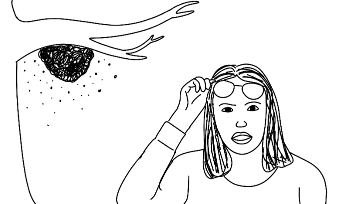

One day, while Patricia is working in her garden, she hears a
faint buzzing. She spots from across the yard a large swarm of
bees in her tree on her property. She is a little scared but she
knows that bees are important to our environment and knows that
she doesn't want to harm them, she just doesn't want them in her
yard.